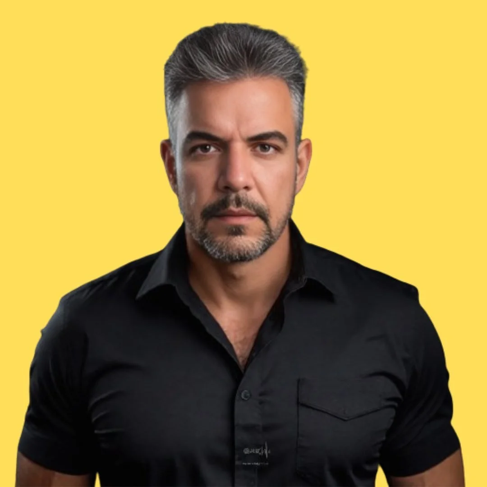

Após os 40 anos, o seu metabolismos muda e o treino tradicional para de funcionar. Através da combinação exata de Treinos Metabólicos e Estratégias de Jejum, eu ajudo você a queimar gordura, recuperar sua energia e conquistar a sua melhor versão.
Você não está fazendo corpo mole. O que funcionava aos 20 anos simplesmente não funciona mais devido às mudanças hormonais e à inflamação silenciosa do corpo.
Dores articulares, inchaço constante e fadiga. O corpo inflamado bloqueia a queima de gordura, tornando qualquer dieta ou exercício inútil a longo prazo.
A sensação de que, mesmo comendo pouco, a balança não desce. Com a queda natural dos hormônios, seu corpo precisa de estímulos metabólicos específicos, não apenas de suor.
Passar horas na esteira ou fazer treinos genéricos que só aumentam o cortisol e a flacidez, gerando frustração e estagnação de resultados.
Estímulos que ativam a via metabólica correta para sinalizar a queima de gordura até 48 horas após o fim da sessão.
Protocolos estruturados para renovação celular, controle da insulina e redução drástica da inflamação corporal.
Eliminação do inchaço e retenção de líquidos através da regulação natural do seu sistema endócrino.
Acompanhamento de elite, adaptando os treinos e estratégias para a sua rotina, na academia ou em casa.

Meu foco é claro: ajudar mulheres acima de 40 anos a emagrecerem de verdade, sem sofrimento, atacando a raiz do problema que é a inflamação e a lentidão metabólica.
Esqueça treinos longos e ineficientes que só machucam as suas articulações. Com a aplicação do Treino Metabólico alinhado aos protocolos de Jejum, ensino o seu corpo a usar a própria gordura como fonte primária de energia, resgatando a sua autoestima e vitalidade.
Pare de lutar contra o seu corpo. Tenha acesso a um protocolo desenhado exclusivamente para o metabolismo feminino após os 40.
Quero Começar Meu Treino